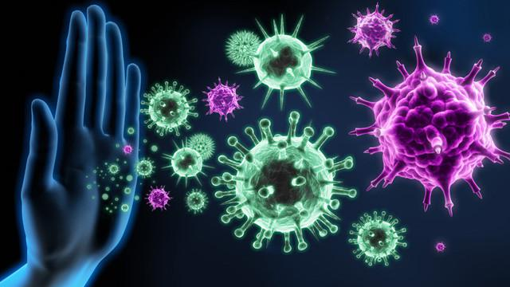
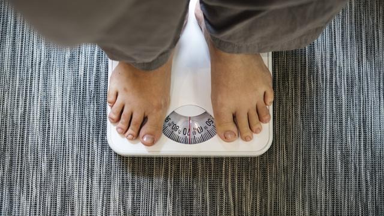
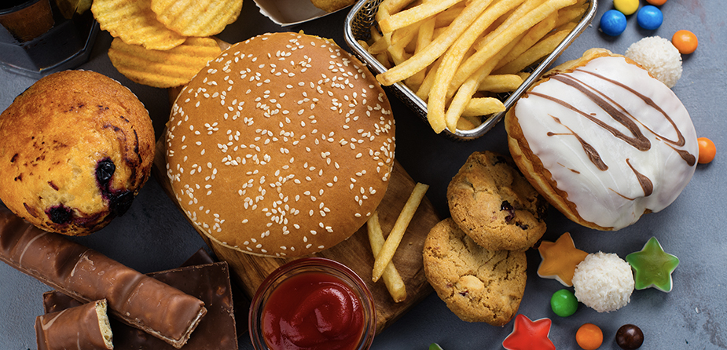
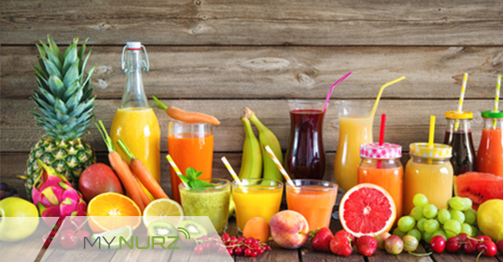
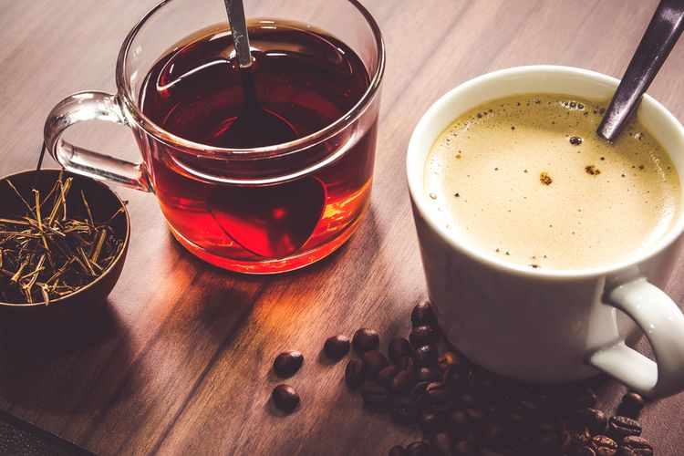
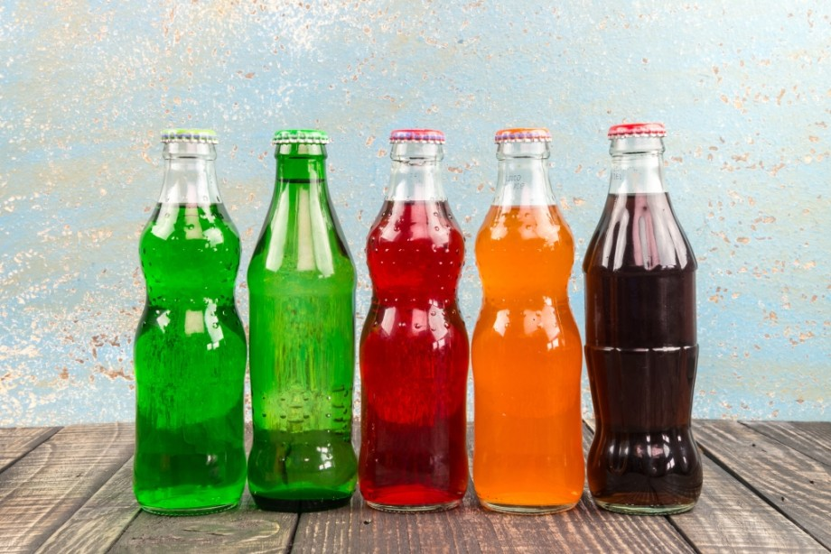
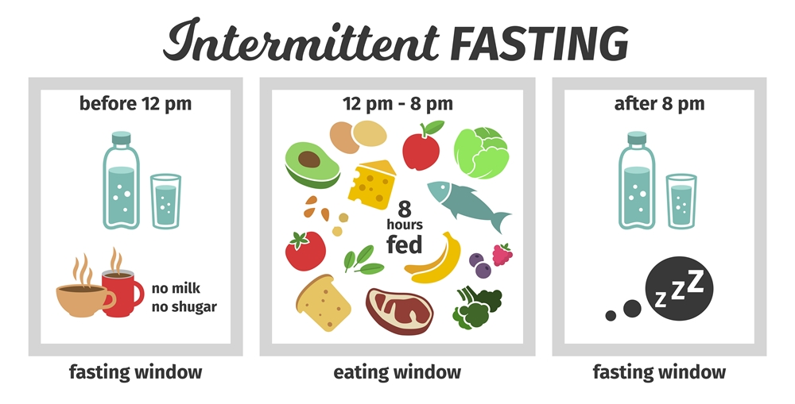
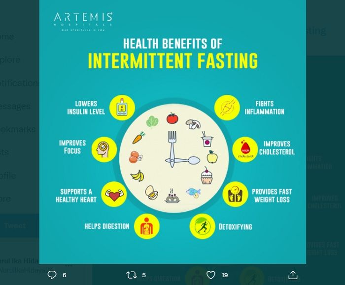

Apa Si Itu Hidup Sehat ?
Hidup Sehat adalah hidup yang bebas dari semua masalah rohani
(mental) ataupun masalah jasmani (fisik). Hidup sehat bisa diartikan
sebagai seseorang yang hidup sehat secara fisik dan psikis tanpa ada
masalah kesehatan sedikitpun. Seakan sudah menjadi tren di zaman
sekarang, hidup sehat menjadi sebuah hal penting yang harus
dilakukan. Sebab memiliki tubuh yang sehat harus diawali dengan
hidup sehat dan bersih sehingga tubuh kita akan terbebas dari
penyakit. Mulai sekarang sudah saatnya kita untuk memulai hidup
sehat.
Ayo hidup sehat hari ini ! merupakan sebuah penyemangat bagi
kita dalam menjalankan gaya hidup sehat. menerapkan hidup sehat
sederhana menjadi langkah awal untuk memulai hidup sehat
berkualitas. Perlu diketahui juga banyak penyakit yang disebabkan
oleh gaya hidup yang tidak sehat. oleh sebab itu sudah saatnya
menjalankan gaya hidup sehat sejak remaja sehingga kita terbiasa dan
tetap hidup sehat hingga usia 40 tahun.
Manfaat Pola Hidup Sehat

1. Menjaga Sistem Imun Tubuh
Pola hidup sehat yang dibangun secara konsisten dan tepat dapat membantu tubuh terlindung
dari
segala
jenis penyakit. Contohnya seperti penyakit jantung, stroke, dan tekanan darah tinggi.
Asupan makanan menjadi satu di antara faktor yang bisa meningkatkan metabolisme berjalan
lebih
maksimal. Ini tentu dapat memicu semua organ tubuh bisa berjalan dengan lebih maksimal.
Jika rutin dilakukan, kamu turut menjaga dan terhindar dari penyakit-penyakit kronis. Selain
itu,
aktivitas fisik yang teratur dan diet yang tepat juga dapat mencegah berbagai masalah
kesehatan.
2. Stamina Dan Energi Meningkat
Tahukah kamu, jika sering mengonsumsi makanan junk food, minuman bersoda, dan makanan kemasan
bisa
membuat badanmu mudah lelah. Makanan tersebut bukan tidak boleh dikonsumsi, tapi dalam
batasan
tertentu, makanan tersebut bisa membahayakan tubuh.
Coba lakukan cara pola hidup sehat dengan diet sehat diiringi latihan fisik secara teratur
guna
meningkatkan kekuatan otot dan daya tahan tubuh. Rutin melakukan aktivitas ini dapat
membantu
mengantarkan oksigen dan nutrisi ke jaringan sel tubuh, terutama jantung.
Tubuh pun akan memiliki pasokan energi yang cukup untuk melangsungkan aktivitas sehari-hari.
Selain
itu, menerapkan pola hidup sehat juga membuat tidurmu menjadi lebih nyenyak.
3. Menjaga Berat Tubuh Ideal
Bagi kamu yang memiliki berat badan berlebih atau obesitas, menerapkan pola hidup sehat bisa
menjadi
solusinya. Selain menyehatkan, kamu bisa memiliki berat tubuh ideal yang penting untuk
menunjang
penampilanmu.
Memiliki berat tubuh ideal biasanya tidak mudah terserang penyakit dibandingkan dengan yang
mengalami
obesitas. Sama halnya seperti seseorang yang mengalami obesitas, kekurangan berat badan juga
membuat
kamu lebih rentan terhadap penyakit.

4. Memperpanjang Usia
Manfaat selanjutnya ketika kamu menerapkan pola hidup sehat dapat memperpanjang angka
harapan
hidup.
Menurut studi yang dilakukan American Council, rutin dan teratur menerapkan pola hidup sehat
dapat
memperpanjang kesempatan untuk hidup lebih lama.
Hal itu perlu diimbangin dengan kebiasaan makan yang sehat, olahraga dan istirahat yang
cukup.
Sehingga proses regenerasi dan metabolisme sel menjadi lebih optimal.
Tubuh pun lebih sehat dan tak mudah jatuh sakit.
5. Baik Untuk Kesehatan Mental
Selain memilki banyak manfaat untuk fisik, manfaat hidup sehat juga untuk kesehatan mental.
Menerapkan pola hidup sehat mampu memperbaiki suasana hati seseorang dan terhindar dari
Depresi.
Dalam menerapkannya, kita harus mengonsumsi makanan bernutrisi yang tentunya baik untuk
kesehatan
fisik dan mental. Selain itu, rutin berolahraga juga baik dalam meningkatkan mood.
Ketika berolahraga, tubuh akan menghasilkan hormon endorfin yang bisa memicu perasaan senang
dan
bahagia.
6. Mempercantik Kulit
Perpaduan antara olahraga rutin dan konsumsi makanan bernutrisi dapat menghasilkan kulit yang
sehat
dan membuat kamu terlihat glowing secara alami. Coba tinggalkan kebiasaan buruk seperti
merokok
dan
minum minuman beralkohol yang hanya akan merugikan.
7. Meningkatkan Kepercayaan Diri
Ketika kamu telah mendapatkan beberapa manfaat di atas, secara otomatis kepercayaan diri kamu
akan
meningkat. Bayangkan saja jika kamu sudah rutin melakukan kegiatan yang baik untuk tubuh dan
hasilnya dapat terlihat dengan jelas, pasti jadi lebih percaya diri.
Dampak Pola Hidup Tidak Sehat
Efek yang ditimbulkan oleh budaya hidup yang tidak sehat yaitu:
- Tubuh kita akan cepat merasa lemas.
- Kita lebih mudah terserang penyakit.
- Daya tahan tubuh atau imunitas berkurang.
- Tertundanya aktivitas berat yang kita lakukan.
- Perasaan yang tidak senang.
- Kurangnya konsentrasi.
- Kesehatan terganggu.
Cara Menerapkan Pola Hidup Sehat Sederhana
1. Makan Secara Sehat dan Seimbang
Penerapan pola hidup sehat yang pertama adalah dengan makan secara sehat dan seimbang.
Makanan
yang
anda konsumsi setiap hari sebaiknya mengandung karbohidrat, protein, lemak, vitamin, dan
mineral.
Karbohidrat dan lemak berfungsi sebagai sumber energi bagi tubuh.
2. Rajin Berolahraga
Langkah yang selanjutnya ialah dengan rajin berolahraga. Aspek tersebut mutlak harus
dilakukan
karena
mempunyai sejumlah manfaat baik yang bisa anda dapatkan untuk kesehatan tubuh. Dengan
berolahraga,
tubuh dan tulang akan menjadi terbiasa untuk bergerak aktif. Tidak hanya itu, olahraga juga
akan
mencegah anda dari bahaya obesitas. Hal itu dikarenakan pada saat berolahraga, tubuh akan
mengeluarkan keringat dan itu bertanda lemak-lemak yang ada pada tubuh ikut terbakar.
3. Istirahat Yang Cukup
Penerapan pola hidup sehat berikutnya adalah dengan istirahat yang cukup. Tidak hanya
memenuhi
kebutuhan, istirahat yang cukup juga bisa meningkatkan mood, dapat memelihara kesehatan
kulit
dan
penampilan anda. Menurut beberapa ahli hormon pertumbuhan manusia (HGH) paling banyak
diproduksi
dalam keadaan tidur nyenyak. HGH adalah kunci yang akan membuat kita tetap sehat juga awet
muda
bahkan ketika kita sudah berhenti tumbuh pada usia-usia tertentu.
4. Hindari Stres Berlebihan
Permasalahan dalam kehidupan memang kerap kali datang silih berganti. Hal semacam ini tidak
jarang
membuat seseorang akan rentan mengalami stres. Padahal stres merupakan salah satu pemicu
datangnya
penyakit dan berisiko membuat tubuh tampak lelah. Banyak jalan keluar untuk menghindari
stres,
seperti melakukan meditasi setiap pagi sebelum bekerja usahakan dilakukan di luar ruangan.
Bisa
juga
dengan mendengarkan alunan musik yang santai, berpikir positif dan jalan-jalan supaya otak
jauh
lebih fresh.
Jenis Makanan Yang Sehat Untuk Tubuh

Di dalam tubuh, makanan yang dikonsumsi akan mengalami proses pencernaan dan penyerapan
nutrisi.Beberapa pilihan makanan sehat yang baik untuk dikonsumsi antara lain adalah :
1. Sayuran hijau
Sayuran hijau menempati urutan pertama dalam jenis makanan sehat karena mengandung banyak
nutrisi
penting, seperti serat, vitamin A, vitamin C, vitamin K, magnesium, kalsium, zat besi,
folat,
dan
kalium, yang sangat baik untuk kesehatan.
Selain itu, sayuran hijau juga kaya akan antioksidan yang dapat melindungi tubuh dari
kerusakan
akibat radikal bebas. Pilihan sayuran hijau juga beragam, mulai dari sawi hijau, brokoli,
kangkung,
selada, hingga bayam. Sayuran hijau juga dapat diolah dengan berbagai macam cara, mulai dari
direbus, ditumis, hingga dikukus.
Untuk mempertahankan warna sayuran hijau tetap menarik, coba masak sayuran hijau menggunakan
air
mineral. Kandungan mineral di dalamnya, seperti sodium bikarbonat dan magnesium hidroksida,
dapat
mempertahankan warna hijau alami daun.
2. Buah-buahan
Selain sayur, buah juga sangat penting dikonsumsi karena mengandung banyak vitamin. Beberapa
buah
yang populer karena kekayaan nutrisinya adalah :
- Apel (serat, vitamin C, dan antioksidan)
- Jeruk (vitamin C)
- Pisang (kalium)
- Alpukat (lemak sehat, kalium, dan vitamin C)
- Beri-berian, seperti blueberry dan strawberry (rendah kalori namun kaya akan antioksidan
dan
serat)
3. Daging dan telur
Daging merupakan salah satu makanan sehat karena kaya akan nutrisi, terlebih lagi daging sapi
tanpa
lemak. Daging jenis ini mengandung protein dan zat besi paling tinggi dibandingkan dengan
daging
jenis lainnya.
Di samping daging, telur juga termasuk ke dalam makanan sehat. Selain tinggi protein, telur
juga
mengandung nutrisi lengkap, mulai dari vitamin, mineral, lemak tak jenuh, hingga zat
antioksidan.
4. Kacang-kacangan dan biji-bijian
Makanan sehat yang sarat akan nutrisi berikutnya adalah kacang-kacangan dan biji-bijian.
Contohnya
adalah kacang tanah, kacang mete, kacang almond, chia seed, biji labu, dan biji wijen.
Kacang-kacangan dan biji-bijian tersebut tidak hanya mengandung protein dan serat yang
tinggi,
tetapi
juga kaya akan vitamin dan mineral, seperti magnesium dan vitamin E.
5. Ikan dan makanan laut lainnya
Makanan laut merupakan pilihan makanan sehat yang kaya akan asam lemak omega-3 dan yodium.
Penelitian
menunjukkan bahwa orang yang sering makan ikan laut cenderung lebih panjang umur dan
memiliki
risiko
lebih rendah terhadap banyak penyakit, termasuk penyakit jantung.
6. Susu
Susu banyak mengandung vitamin, mineral, protein hewani berkualitas, dan lemak sehat. Selain
itu,
susu merupakan salah satu sumber kalsium terbaik. Untuk memproleh nutrisi yang terdapat pada
susu,
Anda dapat mengonsumsinya secara langsung atau mengonsumsi produk olahannya, seperti keju
dan
yoghurt.
Jenis Makanan Yang Tidak Sehat Untuk Tubuh

1. Junk Food
Kentang goreng, burger, keripik, pizza, adalah contoh dari junk food. Makanan ini hanya
memberi
tubuh
banyak kalori yang secara otomatis akan menyebabkan penambahan berat badan. Salah satu
penyebab
utama obesitas dan kegemukan pada anak adalah asupan junk food.
2. Makanan Tinggi Gula
Gula adalah sumber kalori kosong yang lengkap karena mengandung 100% energi dan tidak
mengandung
nutrisi lain. Meskipun bukan satu-satunya faktor risiko untuk masalah kesehatan, makanan
manis
dapat
menyebabkan penambahan berat badan. Konsumsi gula berlebih juga dapat dikaitkan dengan
kerusakan
gigi, diabetes, penyakit jantung, dan kanker
3. Makanan Tinggi Garam
Garam merupakan nutrisi penting yang dibutuhkan oleh tubuh yang membantu mengatur
keseimbangan
cairan, menjaga irama jantung, melakukan impuls saraf dan otot kontrak. Namun, makanan
tinggi
garam
dapat menyebabkan hipertensi. Makanan natrium tinggi adalah makanan kaleng, daging acar,
sereal
sarapan yang sangat asin, roti, kue, kue kering, sup kemasan, saus, dan lain sebagainya.
4. Gorengan
Ada bukti substansial bahwa sering makan gorengan meningkatkan risiko penyakit kronis.
Menurut
satu
analisis, sering mengonsumsi makanan yang digoreng (yaitu, empat kali atau lebih per minggu)
berhubungan dengan diabetes tipe 2, gagal jantung, berat badan yang lebih tinggi, dan
hipertensi.
Jenis Minuman Yang Sehat Untuk Tubuh

1. Air Putih
Air menyediakan satu hal esensial yang dibutuhkan tubuh, yaitu H2O murni. Zat ini mampu
memulihkan
cairan yang hilang melalui metabolisme, pernapasan, keringat, dan pembuangan limbah. Air
putih
adalah minuman yang sempurna untuk memuaskan dahaga dan menyegarkan kembali sistem tubuhmu,
sehingga
wajar saja para ahli menyarankan agar kamu lebih sering minum air putih. Namun, jumlah yang
kamu
butuhkan tergantung pada seberapa banyak kamu makan, kondisi cuaca, dan seberapa aktif kamu
berkegiatan. Adapun saran nutrisi yang sering diulang adalah "minum delapan gelas air setiap
hari,"
yang sudah menjadi panduan terbaik untuk memenuhi sebagian besar kebutuhan cairan seseorang.
2. Teh dan Kopi
Setelah air, teh dan kopi adalah dua minuman yang paling sering dikonsumsi di planet ini. Teh
dan
kopi murni (sebelum diberi gula) adalah minuman bebas kalori yang dipenuhi dengan
antioksidan,
flavonoid, dan zat aktif biologis lainnya yang baik untuk kesehatan. Teh hijau, terutama
varietas
kuat yang disajikan di Jepang, telah mendapat perhatian karena potensinya dalam melindungi
tubuh
dari penyakit jantung. Sementara itu, kopi dapat membantu melindungi dari diabetes tipe 2.
Namun,
jika kamu masih menginginkan manfaat optimal dari dua minuman ini, kurangi penambahan gula
dan
zat
lain yang kurang sehat.

3. Susu
Terdapat tiga jenis susu yang tergolong dalam minuman sehat dan sangat disarankan untuk lebih
sering
dikonsumsi. Jenis susu tersebut antara lain susu rendah lemak, susu skim, dan susu kedelai.
Untuk
anak-anak, susu adalah sumber utama kalsium dan vitamin D. Susu kedelai yang diperkaya
adalah
sumber
alternatif kalsium dan vitamin D yang baik bagi mereka yang memilih untuk tidak minum susu
sapi
atau
alergi akan susu sapi. Keduanya juga merupakan sumber protein dan mikronutrien penting
lainnya.
Namun, bukan berarti kamu dapat mengonsumsinya dalam jumlah banyak. Bagi orang dewasa,
sebaiknya
membatasi susu (dan semua produk susu) menjadi satu atau dua gelas sehari.
4. Minuman Kalori dengan Kandungan Nutrisi
Kategori ini mencakup jus buah, jus sayuran, susu murni, minuman olahraga, dan air yang
mengandung
vitamin. Masing-masing memiliki kelebihan dan kekurangannya. Jus buah seratus persen
memiliki
sebagian besar nutrisi buah itu sendiri, tetapi biasanya memberikan lebih banyak energi.
Dietary
Guidelines for Americans merekomendasikan tidak lebih dari satu porsi (4 ons) jus buah 100%
sebagai
bagian dari asupan buah harian.
Smoothie buah biasanya sangat tinggi kalori, dan karenanya tidak direkomendasikan sebagai
minuman
harian. Jus sayuran adalah alternatif kalori yang lebih rendah daripada jus buah, tetapi
mungkin
mengandung banyak natrium. Minuman olahraga memiliki kalori lebih sedikit daripada minuman
ringan,
dan menawarkan sedikit natrium, klorida, dan kalium. Mereka tidak dibutuhkan oleh orang
biasa.
Satu-satunya orang yang benar-benar membutuhkannya adalah atlet yang berolahraga selama
lebih
dari
satu jam dalam peregangan dan banyak berkeringat.
Jenis Minuman Yang Tidak Sehat Untuk Tubuh

1. Minuman dengan Kadar Gula Tinggi
Minuman manis perlu diwaspadai karena ia dapat memicu penyakit diabetes tipe 2, karena
kandungan
fruktosa di dalamnya. Meski juga terdapat pada makanan sehat seperti buah, sayur, dan madu,
fruktosa
yang berlebihan pada minuman manis penting untuk dikontrol asupannya. Fruktosa diketahui
mampu
merangsang produksi sel lemak. Akibat terlalu banyak produksi fruktosa, maka produksi hormon
leptin
yang bertugas mengatur asupan dan pengeluaran energi terganggu. Jadi, orang yang kelebihan
fruktosa
dikhawatirkan mengalami penumpukan lemak yang lebih cepat. Contohnya : Minuman bersoda dan
Minuman
berenergi.
Food and Drug Administration (FDA) pernah menyebutkan bahwa konsumsi gula tambahan tak boleh
melebihi
10 persen dari asupan kalori per hari. Misalnya, jika kamu mengonsumsi 2000 kalori per hari,
berarti
jumlah ideal gula tambahan yang bisa kamu nikmati adalah sebanyak 52 gram.
2. Alkohol
Secara umum, efek alkohol pada tubuh akan tergantung pada beberapa hal, seperti kadar alkohol
yang
diminum, seberapa banyak alkohol yang diminum, jenis kelamin, berat badan, usia, dan
metabolisme
tubuh. Salah satu organ yang akan bekerja keras jika kamu terlalu banyak konsumsi alkohol
adala
hati. Kinerjanya jadi lebih lambat akibat konsumsi alkohol, padahal ia berfungsi dalam
menyaring
racun dan limbah tak terpakai, sehingga tidak menumpuk dalam tubuh.
Faktanya, sekitar satu dari tiga kasus transplantasi hati di Amerika Serikat berawal dari
penyakit
hati yang disebabkan oleh konsumsi alkohol berlebih. Tidak hanya itu, sirosis hati karena
konsumsi
alkohol berlebih juga tercatat menjadi penyebab kematian ke-12 terbanyak di Amerika pada
2009.
Selain itu, alkohol juga memiliki efek diuretik yang dapat meningkatkan jumlah urine yang
diproduksi
tubuh. Karena konsumsi alkohol berlebihan, ginjal jadi kesulitan untuk mengatur aliran urine
dan
cairan tubuh termasuk distribusi ion natrium, kalium, dan klorida. Kondisi ini bisa
mengganggu
keseimbangan elektrolit di dalam tubuh yang kemudian menyebabkan dehidrasi.
3. Minuman Mengandung Kafein Tinggi
Salah satu minuman dengan kadar tinggi kafein tersebut adalah kopi. Dalam jumlah yang tepat,
kopi
bisa menawarkan banyak manfaat bagi tubuh. Namun, di sisi lain, terlalu banyak minum kopi
juga
berdampak buruk untuk kesehatan. Pada setiap orang, konsumsi kopi yang aman atau toleransi
terhadap
kopi akan berbeda-beda. Terlebih pada orang yang tak terbiasa minum kopi, sedikit saja
kafein
bisa
menyebabkan gejala pada tubuh.
Normalnya, asupan aman untuk dewasa adalah 400 miligram, yaitu setara dengan empat cangkir
kopi,
10
kaleng minuman soda, atau dua buah minuman energi. Kafein dilaporkan dapat menyebabkan
gangguan
kesehatan seperti masalah pencernaan, insomnia, naiknya tekanan darah, kecemasan, dan sering
buang
air kecil.
Pentingnya Intermittent Fasting

Apa itu Intermittent Fasting ?
Puasa intermiten adalah pola makan di mana kamu menerapkan antara periode makan dan puasa.
Dalam
hal
ini, menu makanan yang kamu makan bisa apa saja. Namun, kapan kamu harus memakannya adalah
fokus
dari metode IF ini.
Metode Intermittent Fasting
1. Metode 16/8
Disebut protokol Leangains, metode ini mengharuskan kamu melewatkan sarapan dan membatasi
waktu
makan harian menjadi 8 jam, seperti jam 1–9 malam. Kemudian kamu berpuasa selama 16 jam di
antaranya. Banyak orang menganggap metode 16/8 sebagai metode yang paling sederhana, paling
berkelanjutan, dan paling mudah untuk diterapkan.
2. Eat-Stop-Eat
Metode ini melibatkan puasa selama 24 jam, kamu bisa melakukannya selama sekali atau dua kali
seminggu. Misalnya dengan tidak makan dari makan malam satu hari sampai makan malam keesokan
harinya. Jangan langsung lakukan metode ini ya jika kamu belum terbiasa dengan metode yang
lebih
mudah.
3. Diet 5: 2
Dengan metode ini, kamu hanya mengonsumsi 500-600 kalori pada dua hari berturut-turut dalam
waktu
seminggu, tetapi makan dengan normal di 5 hari lainnya. Dengan mengurangi asupan kalori,
semua
kamu
akan mengalami penurunan berat badan secara cepat.
Bagaimana Pengaruh Intermittent Fasting Pada Tubuh ?

Berikut beberapa perubahan yang terjadi pada tubuh saat berpuasa :
1. Human Growth Hormone (HGH): Kadar hormon pertumbuhan meroket, meningkat sebanyak 5 kali
lipat.
Hal ini memiliki manfaat untuk menghilangkan lemak dan penambahan otot,
2. Insulin: Sensitivitas insulin meningkat dan kadar insulin turun drastis. Tingkat insulin
yang
lebih rendah membuat lemak tubuh yang tersimpan lebih mudah diakses
3. Gene expression: Ada perubahan fungsi gen yang terkait dengan umur panjang dan
perlindungan
terhadap penyakit
Kesimpulan
Pola Hidup Sehat adalah bentuk perwujudan orientasi hidup sehat dalam budaya perorangan,
keluarga,
dan masyarakat, yang bertujuan untuk meningkatkan, memelihara, dan melindungi kesehatannya baik
secara fisik, mental, spiritual, maupun sosial. Perilaku hidup bersih dan sehat bertujuan
memberikan
pengalaman belajar atau menciptakan suatu kondisi bagi perorangan, kelompok, keluarga, dengan
membuka jalur komunikasi, informasi, dan edukasi untuk meningkatkan pengetahuan, sikap, serta
perilaku sehingga masyarakat sadar, mau dan mampu mempraktikkan perilaku hidup bersih dan sehat.
Melalui pola hidup sehat diharapkan masyarakat dapat mengenali dan mengatasi masalah sendiri dan
dapat menerapkan cara-cara hidup sehat dengan menjaga, memelihara dan meningkatkan kesehatannya.
Manfaat hidup sehat secara umum adalah untuk meningkatkan kesadaran masyarakat agar mau dan mampu
menjalankan hidup bersih dan sehat. Hal tersebut menjadi penting untuk dilakukan agar masyarakat
sadar dan dapat mencegah serta mengantisipasi atau menanggulangi masalah-masalah kesehatan yang
mungkin muncul. Selain itu, dengan menerapkan dan mempraktikkan hidup sehat diharapkan
masyarakat
mampu menciptakan lingkungan yang sehat sehingga dapat meningkatkan kualitas hidup. Dalam
implementasinya, kebermanfaatan hidup sehat ini dapat
Masing masing metode intermittent fasting memiliki rerata kolesterol total yang
berbeda antara sebelum dan sesudah perlakuan. Rerata dari metode Time resisted
feeding mengalami kenaikan kadar kolesterol total sebesar 0,80 mg/dl. Rerata dari
metode alternate day fasting mengalami penurunan kadar kolesterol total sebesar 0,20
mg/dl. Rerata dari metode modified fasting regimens mengalami penurunan kadar
kolesterol sebesar 2,90 mg/dl, dan rerata kontrol negatif mengalami peningkatan kadar
kolesterol sebesar 0,50 mg/dl.
Berdasarkan Uji T berpasangan hanya satu dari tiga metode Intermitten Fasting yang
mengalami penurunan kadar kolesterol yang bermakna pada tikus putih galur Sprague
dawley yaitu modified fasting regimens.
Intermitten fasting dengan metode modified fasting regimens lebih efektif
menurunkan kadar kolesterol dibandingkan metode Time restricted feeding, Alternate day fasting
dan
Kontrol Negatif